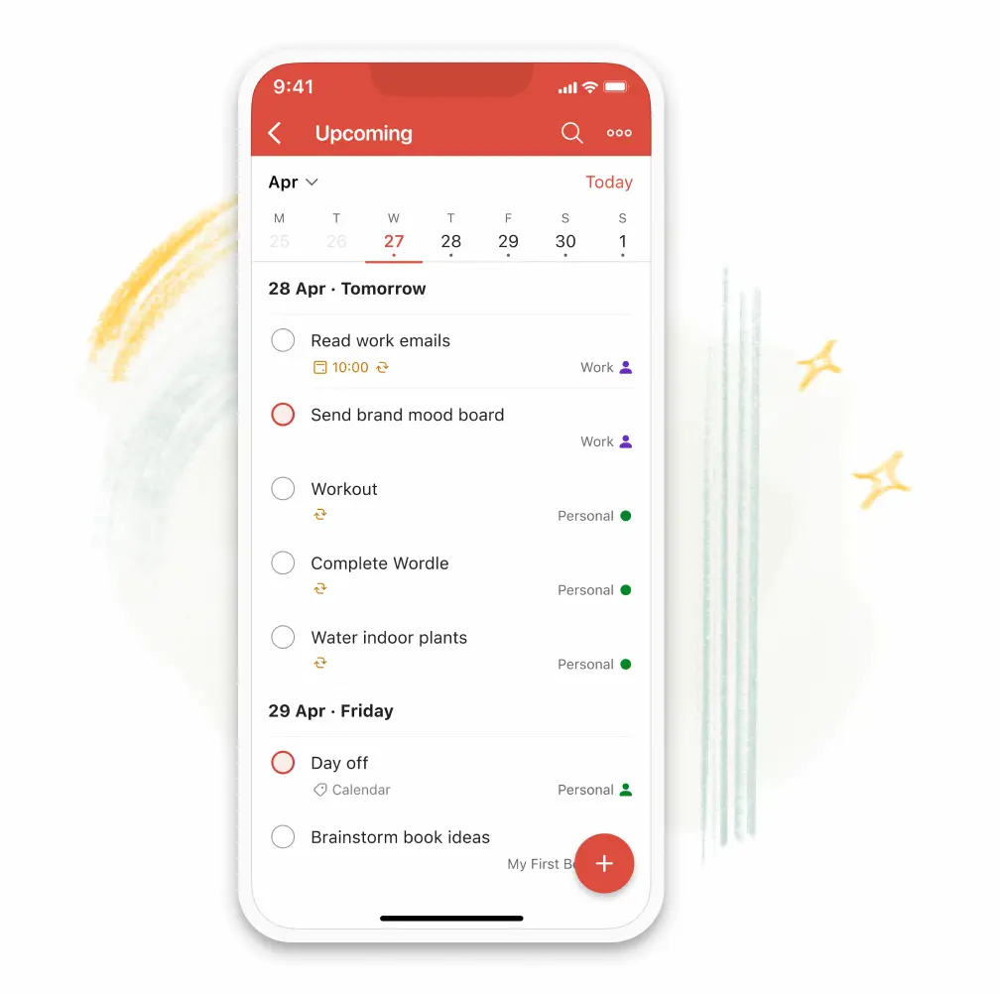

Clear your mind
Reach that mental clarity you’ve been longing for.
Your to-do lists are automatically sorted into Today, Upcoming and custom Filter views to help you focus on your most important things.
Your to-do lists are automatically sorted into Today, Upcoming and custom Filter views to help you focus on your most important things.
Add tasks like “Read work emails every day at 10am” to fill your to-do list in seconds using Todoist’s powerful natural language recognition and recurring dates.